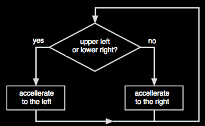

בהדמיה שמימין מופיע כלב ים המסוגל לאזן כדור על אפו. הכדור מחובר לאפו של כלב הים באמצעות קפיץ. תנועתו של כלב הים מבוקרת באמצעות מערך בקרה פשוט למדי. אם הכדור (כפי שהוא נראה ממיקום האף) נמצא ברביע השמאלי עליון או הימני תחתון, כלב הים יאיץ לכיוון שמאל. אחרת הוא יאיץ לכיוון ימין.
הרביע הפעיל מוצג על המעגל המופיע בפינה הימנית עליונה של החלון. תוכלו "להציק" לכלב הים על-ידי גרירת הכדור. כלב הים יעשה כמיטב יכולתו כדי לאזן את הכדור.
|  |
לולאת הבקרה להשגת האיזון